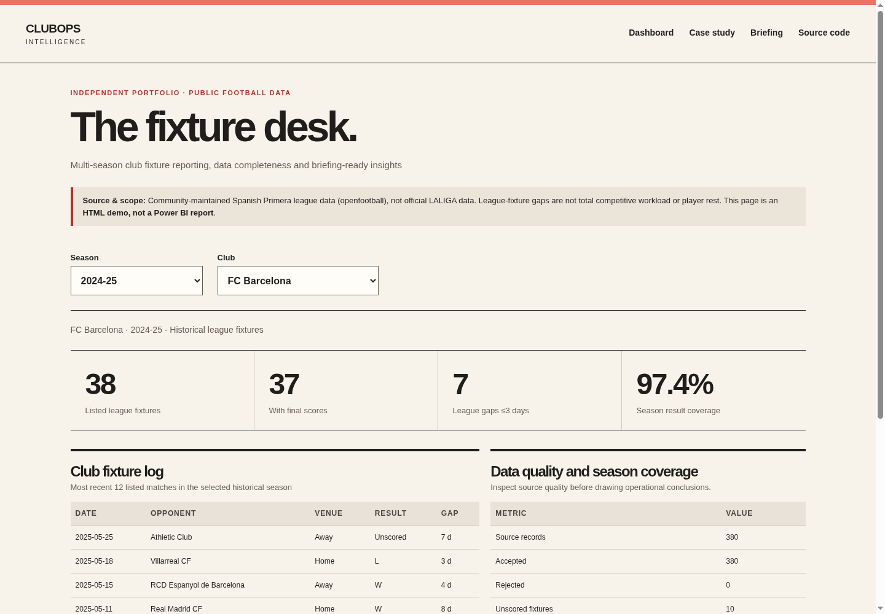

CLUBOPS / CASE STUDY
Historical calendars. Visible data quality.
Project overview
A club-office analyst needs a consistent way to compare league calendars across seasons. ClubOps brings public fixtures, missing results and source evidence into one reporting workflow. This independent portfolio uses historical community data, with no LALIGA or club affiliation.
Business question
How can a club-office analyst compare historical league calendars while making missing results visible?
Approach
- Public JSON data, pinned to exact source hashes
- Python validation and explicit club-name normalization
- Reporting CSVs with fixture and club-season views
- Native Excel reporting and an interactive browser dashboard
- A traceable briefing with fixture IDs and raw source rows
Key findings
- 760 accepted league fixtures across two historical seasons: 2023–24 and 2024–25
- 1,520 club-fixture perspectives: two club views for every accepted fixture
- 40 club-season summaries: 20 clubs in each season
- Ten unknown final match results in the 2024–25 snapshot
- 97.37% result coverage in 2024–25: 370 scored fixtures out of 380 accepted fixtures
- Barcelona league-calendar gaps of three days or less: five in 2023–24 and seven in 2024–25
Business implication
A full fixture list does not guarantee full results data. Both seasons contain 380 accepted fixtures, but ten 2024–25 results remain unknown. An analyst should disclose the missing scores before presenting season outcomes.
Short league-calendar gaps identify dates to review against a full competition calendar. They are screening signals, not proof of fatigue, physical rest or player workload; cup and European matches are excluded.
Genuine visual evidence
The browser dashboard exposes club and season controls alongside source-quality information. The native Excel PivotTable provides an inspectable comparison of fixtures, scored matches and short gaps. These are genuine application captures, not mockups.


Quality and validation
The release checks exercise fixture accounting, missing scores, duplicate detection, source integrity and page rendering. For this release, 24 Python tests passed with site packages disabled and again with Python optimization enabled. The pipeline check reconciled 760 fixtures and 1,520 club-fixture rows. Page and browser checks are recorded separately in the release verification notes.
Earlier Excel evidence: the workbook was calculated, saved and reopened in Excel 16.0, with 120 PivotTable values reconciled to the CSVs. This was not rerun in the current Linux environment.
Earlier Power BI static evidence: 32 schema-bearing files pass ten cached Microsoft schemas. The authored PBIP has seven tables, seven relationships, 14 DAX definitions, three pages and 23 bound visuals. Static checks do not establish Desktop acceptance: TMDL engine parsing, M/DAX execution, refresh, rendering and interactions remain unverified.
Limitations
- Community-maintained historical openfootball data, not an official or live LALIGA feed
- Ten unknown final results; no official cross-source reconciliation
- League-only calendar gaps, with no physical-rest or fatigue inference
- No real-client impact measurements or claimed time savings
- Independent project with no LALIGA affiliation, endorsement or internal access
- PBIP authored and statically checked; Power BI Desktop acceptance pending
- No implemented LLM feature or Power Automate flow
- Historical briefings reconstruct downloaded data, not schedules archived at the cutoff